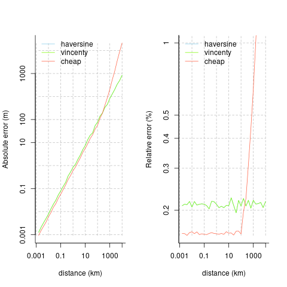

An ultra-lightweight, zero-dependency package for very fast
calculation of geodesic distances. Main eponymous function,
geodist(), accepts only one or two primary arguments, which
must be rectangular objects with unambiguously labelled longitude and
latitude columns (that is, some variant of
lon/lat, or
x/y).
n <- 50
x <- cbind (-10 + 20 * runif (n), -10 + 20 * runif (n))
y <- cbind (-10 + 20 * runif (2 * n), -10 + 20 * runif (2 * n))
colnames (x) <- colnames (y) <- c ("x", "y")
d0 <- geodist (x) # A 50-by-50 matrix
d1 <- geodist (x, y) # A 50-by-100 matrix
d2 <- geodist (x, sequential = TRUE) # Vector of length 49
d2 <- geodist (x, sequential = TRUE, pad = TRUE) # Vector of length 50Input(s) to the geodist() function can be in arbitrary
rectangular format.
n <- 1e1
x <- tibble::tibble (
x = -180 + 360 * runif (n),
y = -90 + 180 * runif (n)
)
dim (geodist (x))
#> [1] 10 10
y <- tibble::tibble (
x = -180 + 360 * runif (2 * n),
y = -90 + 180 * runif (2 * n)
)
dim (geodist (x, y))
#> [1] 10 20
x <- cbind (
-180 + 360 * runif (n),
-90 + 100 * runif (n),
seq (n), runif (n)
)
colnames (x) <- c ("lon", "lat", "a", "b")
dim (geodist (x))
#> [1] 10 10All outputs are distances in metres, calculated with a variety of
spherical and elliptical distance measures. Distance measures currently
implemented are Haversine, Vincenty (spherical), the very fast mapbox
cheap ruler (see their blog
post), and the “reference” implementation of Karney
(2013), as implemented in the package sf. (Note
that geodist does not accept sf-format
objects; the sf package
itself should be used for that.) Note that The mapbox cheap ruler
algorithm is intended to provide approximate yet very fast distance
calculations within small areas (typically the size of single cities or
study sites).
The geodist_benchmark() function - the only other
function provided by the geodist package - compares the
accuracy of the different metrics to the nanometre-accuracy standard of
Karney
(2013).
geodist_benchmark (lat = 30, d = 1000)
#> haversine vincenty cheap
#> absolute 0.836551561 0.836551562 0.594188257
#> relative 0.002155514 0.002155514 0.001616718All distances (d) are in metres, so that result
indicates that all measures are accurate to within 1m over distances out
to several km. The following plots compare the absolute and relative
accuracies of the different distance measures implemented here. The
mapbox cheap ruler algorithm is the most accurate for distances out to
around 100km, beyond which it becomes extremely inaccurate. Average
relative errors of Vincenty distances remain generally constant at
around 0.2%, while relative errors of cheap-ruler distances out to 100km
are around 0.16%.

The following code demonstrates the relative speed advantages of the
different distance measures implemented in the geodist
package.
n <- 1e3
dx <- dy <- 0.01
x <- cbind (-100 + dx * runif (n), 20 + dy * runif (n))
y <- cbind (-100 + dx * runif (2 * n), 20 + dy * runif (2 * n))
colnames (x) <- colnames (y) <- c ("x", "y")
rbenchmark::benchmark (
replications = 10, order = "test",
d1 <- geodist (x, measure = "cheap"),
d2 <- geodist (x, measure = "haversine"),
d3 <- geodist (x, measure = "vincenty"),
d4 <- geodist (x, measure = "geodesic")
) [, 1:4]
#> test replications elapsed relative
#> 1 d1 <- geodist(x, measure = "cheap") 10 0.058 1.000
#> 2 d2 <- geodist(x, measure = "haversine") 10 0.185 3.190
#> 3 d3 <- geodist(x, measure = "vincenty") 10 0.276 4.759
#> 4 d4 <- geodist(x, measure = "geodesic") 10 3.106 53.552Geodesic distance calculation is available in the sf
package. Comparing computation speeds requires conversion of sets of
numeric lon-lat points to sf form with the following
code:
require (magrittr)
x_to_sf <- function (x) {
sapply (seq (nrow (x)), function (i) {
sf::st_point (x [i, ]) %>%
sf::st_sfc ()
}) %>%
sf::st_sfc (crs = 4326)
}
n <- 1e2
x <- cbind (-180 + 360 * runif (n), -90 + 180 * runif (n))
colnames (x) <- c ("x", "y")
xsf <- x_to_sf (x)
sf_dist <- function (x) sf::st_distance (x, x)
geo_dist <- function (x) geodist (x, measure = "geodesic")
rbenchmark::benchmark (
replications = 10, order = "test",
sf_dist (xsf),
geo_dist (x)
) [, 1:4]
#> Linking to GEOS 3.6.2, GDAL 2.3.0, proj.4 5.0.1
#> test replications elapsed relative
#> 2 geo_dist(x) 10 0.066 1.000
#> 1 sf_dist(xsf) 10 0.210 3.182Confirm that the two give almost identical results:
ds <- matrix (as.numeric (sf_dist (xsf)), nrow = length (xsf))
dg <- geodist (x, measure = "geodesic")
formatC (max (abs (ds - dg)), format = "e")
#> [1] "7.4506e-09"All results are in metres, so the two differ by only around 10 nanometres.
The geosphere
package also offers sequential calculation which is benchmarked with
the following code:
fgeodist <- function () geodist (x, measure = "vincenty", sequential = TRUE)
fgeosph <- function () geosphere::distVincentySphere (x)
rbenchmark::benchmark (
replications = 10, order = "test",
fgeodist (),
fgeosph ()
) [, 1:4]
#> test replications elapsed relative
#> 1 fgeodist() 10 0.022 1.000
#> 2 fgeosph() 10 0.048 2.182